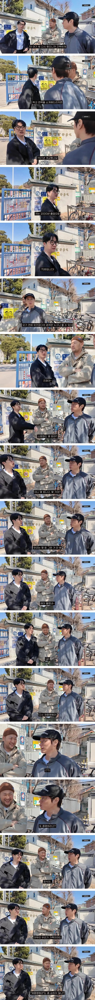

다시 증명해라!

증명 ㅋㅋㅋ 요즘 넷플 1위 들쥐 ㅋㅋ 자신을 증명하는 이야기임
아니 학과 데이터상에 졸업증빙서가 있고
교수들이랑 다른 졸업생들이 맞다고 하는데 왜자꾸 증명하래 ㅋㅋㅋㅋㅋ
mbc 스탠퍼드 찾아갔을 때 교수랑 단과대 교직원이 타블로 반기는거 보고 이미 끝났음.. 입학처 교수가 졸업 인증해주는데 mbc가 스탠퍼드를 매수했대ㅋㅋㅋ 무슨 동네 허름한 학원도 아니고 그런 세계명문대가 뭐가 아쉬워서
아 투컷 선배님이였넹
??: 저새끼 타진요일지도 몰라
??:대한민국의 3분의 1이 타진요였는데
???:우리가 3명이야!!
??? : 헤일 타진요